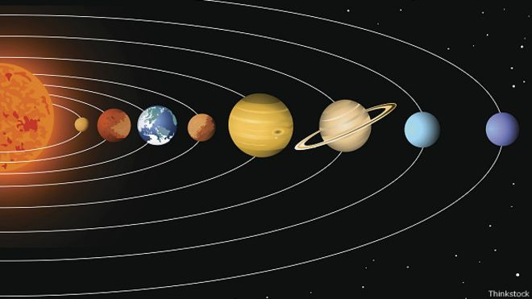

|
Земля́Земля́ — третья по удалённости от Солнца планета Солнечной системы. Самая плотная, пятая по диаметру и массе среди всех планет и крупнейшая среди планет земной группы, в которую входят также Меркурий, Венера и Марс. Иногда упоминается как Мир, Голубая планета, иногда Терра (от лат. Terra). Единственное известное человеку на данный момент тело Солнечной системы в частности и Вселенной вообще, населённое живыми организмами. Научные данные указывают на то, что Земля образовалась из солнечной туманности около 4,54
миллиарда лет назад и вскоре после этого приобрела свой единственный естественный спутник
— Луну. Предположительно жизнь появилась на Земле примерно 4,25 млрд лет назад, то есть
вскоре после её возникновения. С тех пор биосфера Земли значительно изменила атмосферу и
прочие абиотические факторы, обусловив количественный рост аэробных организмов, а также
формирование озонового слоя, который вместе с магнитным полем Земли ослабляет вредную для
жизни солнечную радиацию, тем самым сохраняя условия существования жизни на Земле.
Радиация, обусловленная самой земной корой, со времён её образования значительно снизилась
благодаря постепенному распаду радионуклидов в ней. Кора Земли разделена на несколько
сегментов, или тектонических плит, которые движутся по поверхности со скоростями порядка
нескольких сантиметров в год. Изучением состава, строения и закономерностей развития Земли
занимается наука геология *** Современной научной гипотезой формирования Земли и других планет Солнечной системы является гипотеза солнечной туманности, по которой Солнечная система образовалась из большого облака межзвёздной пыли и газа. Облако состояло главным образом из водорода и гелия, которые образовались после Большого взрыва, и более тяжёлых элементов, оставленных взрывами сверхновых. Примерно 4,5 млрд лет назад облако стало сжиматься, что, вероятно, произошло из-за воздействия ударной волны от вспыхнувшей на расстоянии нескольких световых лет сверхновой. Когда облако начало сокращаться, его угловой момент, гравитация и инерция сплюснули его в протопланетный диск перпендикулярно к его оси вращения. После этого обломки в протопланетном диске под действием силы притяжения стали сталкиваться, и, сливаясь, образовывали первые планетоиды. В процессе аккреции планетоиды, пыль, газ и обломки, оставшиеся после формирования Солнечной системы, стали сливаться во всё более крупные объекты, формируя планеты. Примерная дата образования Земли — 4,54±0,04 млрд лет назад. Весь процесс формирования планеты занял примерно 10—20 миллионов лет Луна сформировалась позднее, примерно 4,527±0,01 млрд лет назад, хотя её происхождение до
сих пор точно не установлено. Основная гипотеза гласит, что она образовалась путём аккреции
из вещества, оставшегося после касательного столкновения Земли с объектом, по размерам
близким Марсу и массой 10—12 % от земной (иногда этот объект называют «Тейя»).
При этом столкновении было высвобождено примерно в 100 млн раз больше энергии, чем в
результате того, которое, предположительно, вызвало вымирание динозавров. Этого было
достаточно для испарения внешних слоёв Земли и расплавления обоих тел. Часть мантии
была выброшена на орбиту Земли, что предсказывает, почему Луна обделена металлическим
материалом, и объясняет её необычный состав. Под влиянием собственной силы тяжести
выброшенный материал принял сферическую форму и образовалась Луна
|